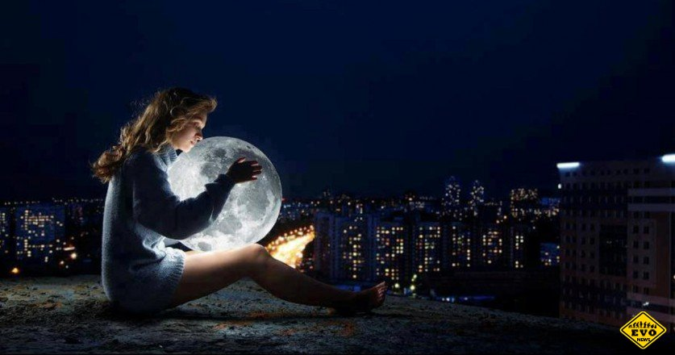

Билли Грэм. Звезды не откроют нам наше будущее...
 Правильнее называть это явление – сомнамбулизм, оно произошло от латинских слов сон – somnus и хожу – ambulo. А слово "лунатик" происходит от латинского lunaticus — безумный, а вовсе не от слова Луна. Сомнамбулизм нередко связывают с воздействием Луны на человека, оттуда и название «лунатизм». Но научно доказанных подтверждений этому нет. «Человек, сам того не ведая, очень зависит от энергии Луны, особенно это касается полнолуния и перигея — точки, в которой Луна максимально приближена к Земле. Снохождение возникает обычно во время неполного пробуждения от глубокой фазы медленного сна, при этом мозг пребывает в состоянии полусна-полубодрствования. Глаза лунатика обычно открыты. Раннее считалось, что лунатик (сомнамбула) смотрит сон и делает то, что ему снится, но исследования этого не подтвердили. В этот период человек находится в состоянии измененного сознания, похожего на гипнотическое. Оно проявляется снижением или отсутствием кожной чувствительности, усилением возбудимости некоторых органов чувств и восприимчивостью субъекта к внушению. Около 40 % лунатиков из-за не контролированных действий во сне наносят себе физические повреждения различной степени. Около 2 % всех людей периодически ходят во сне. У детей снохождение встречается достаточно часто, но с возрастом обычно проходит. Как и ночные страхи, эпизоды снохождения чаще случаются у них в периоды напряжения и тревоги, при этом психически дети совершенно здоровы. У взрослых снохождение требует более серьёзного внимания. Причинами его могут быть стресс, тревога, иногда эпилепсия. Сексомния — расстройство психики, при котором человек во время сна занимается сексом или проявляет другую сексуальную активность. Сексомния считается вариацией лунатизма. В средневековье болезнь лунатизм тщательно скрывалась от общественности, родственники и близкие больного опасались гонений со стороны инквизиции. Существовавшая инструкция «Молот ведьм», рассматривала лунатиков, как одержимых нечистой силой, и рекомендовала казнить их огнем или утоплением. Целый ряд разнообразных экспериментов, проводившийся над людьми, страдающими лунатизмом, показал, что данная болезнь генетически обусловлена. То есть если у вас в роду быи лунатики, то и вы можете стать сомнамбулой.